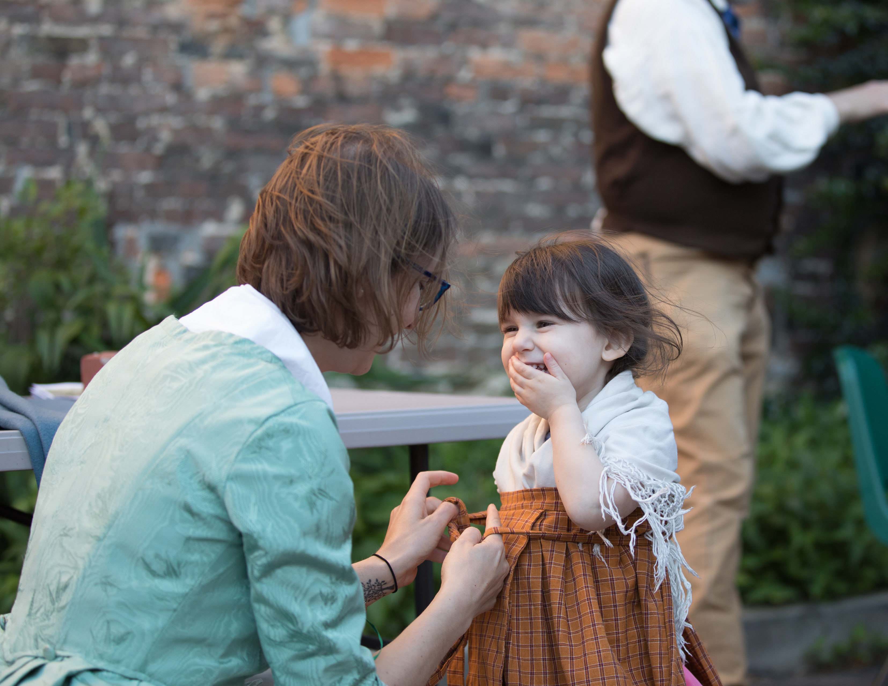

Lindsay Varner
Executive Director, Cumberland County Historical Society

Preserving the Past. Investing in the Future.
Cumberland County Historical Society connects people with the history of this place. Our capital campaign would improve the spaces where that history is cared for, explored, and shared.
Caring for historical materials and helping people explore them depend on the places where that work happens.
CCHS brings these activities together through its museum, archives, and educational work. As the collection and the community's stories grow, the Society's plans address the places that support them.
The campaign would add climate-controlled collection storage, improve research spaces, and adapt Todd Hall for scanning and processing materials. A proposed High Street entrance and updated museum store would connect visitors with the museum and archives. At Odd Fellows, restoration would prepare spaces for learning, staff work, and gatherings while retaining the hall's character.
Collection care, research, and education are ongoing responsibilities. This campaign focuses on the buildings and workspaces supporting them. Its proposed improvements connect the care of historical materials with places for people to study, learn, and gather.
The places and people behind the plans.
The hall, a camp activity, and a chance to explore historical dress show different parts of the Society's work. The campaign would improve spaces that support care, learning, and gatherings.



The Society's history includes gifts, partnerships, and investments that changed how it cared for and shared the county's stories. This campaign continues that work.
The institution was formally organized as the James Hamilton Library Association, following James Hamilton Jr.'s bequest.
An endowment campaign helped provide resources for a professional staff.
A partnership with local school districts connected regional history with learning.
The Society purchased property at 29–33 West High Street, later home to its museum shop.
The campaign brings the Society's leadership and supporters together around plans for preservation, learning, and visitor spaces. Contact us to discuss the projects or how you would like to take part.
Executive Director, Cumberland County Historical Society
President, Board of Trustees
Co-Chair, Campaign Committee
Support the spaces that care for Cumberland County's history and make it available for learning and discovery.